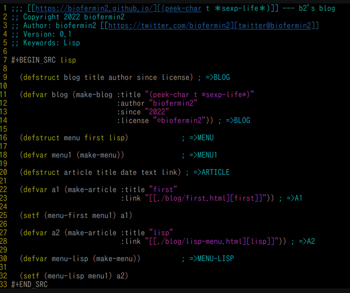

雰囲気hackerっぽいイメージ笑を出そうと、 当初はcssで配色デザインとか考えていたが、 いかんせん、あまりcssに馴染んでないので面倒臭い。 なんか配色そのままで出すものがあったなぁと vimの:TOhtmlで当初は吐き出してみた。
vim側のカラー設定は正直あまりやっていないので、 emacsと比べたらなんともショボかった。 しかもlinkの箇所の設定が丸見え。 
かつて使った事あるけど、すっかり忘れていた笑 htmlizeというツールがあり、package-list-packagesから 見てみると既に入っていた。
適当になんちゃってS式で書こうかとも思ってたが、 それでは面白くないなと、なんとなく気付いたら ブログをdefstructで定義するところから始めて なんか使えるデータをorg-babelで出力したいな と思うように。
org-babelではなぜかformatでまともに出力してくれない。 printは出来るけど。 そういう事もあって、せっかく作った構造体だったが、 それで出力したメニューでってところまで残念ながら 持っていけなかった。 formatの評価自体出来るけど、出力したものは リンクが効かない。
いきなりだが、とりあえず、だいたいの雛形は 出来たので、この話題はここで終わりにする。